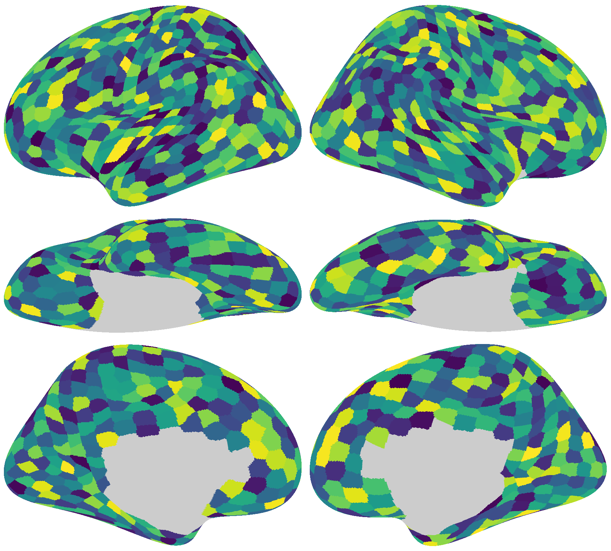

Save the high-res image
Contents
Save the high-res image¶
This example shows how to plot random data on the brain and save it as an image file.

Render the image¶
The brain_plot function renders the image based on data v and returns a NumPy array.
The Numpy array has a np.float64 dtype, and the range of its values is 0–1.
import numpy as np
from brainplotlib import brain_plot
rng = np.random.default_rng(0)
v = rng.random((1175, ))
img = brain_plot(v, vmax=1, vmin=0, cmap='viridis')
print(img.dtype, img.shape)
print(img.max(), img.min())
float64 (1560, 1728, 4)
1.0 0.0
Save the image¶
The rendered image can be saved using the package of your choice:
import matplotlib.pyplot as plt
fig = plt.figure(figsize=(img.shape[1] / 200, img.shape[0] / 200), dpi=200)
ax = fig.add_axes([0, 0, 1, 1])
ax.imshow(img)
ax.axis('off')
plt.savefig('save_image_matplotlib.png')
plt.close()
from PIL import Image
im = Image.fromarray(
np.round(img * 255).astype(np.uint8))
im.save('save_image_pillow.png')
Note
The code block above requires that the Pillow package has been installed.
import cv2
## The default channel order of OpenCV is BGR rather than RGB.
reorder = {3: [2, 1, 0], 4: [2, 1, 0, 3]}[img.shape[2]]
cv2.imwrite(
'save_image_opencv.png',
np.round(img[:, :, reorder] * 255).astype(np.uint8))
Note
The code block above requires that OpenCV and its Python bindings to be installed.